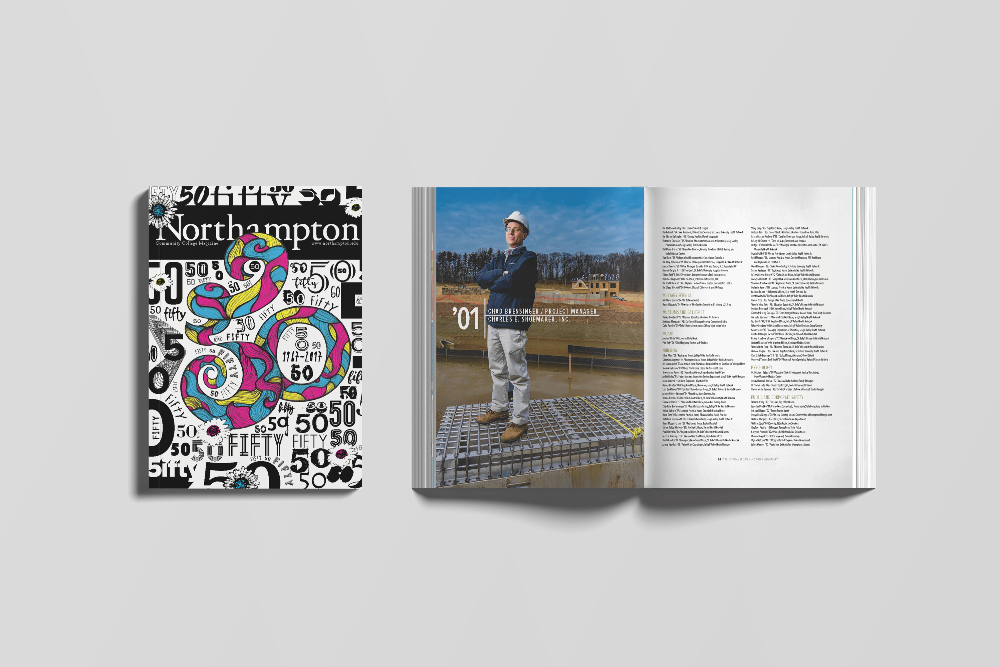

NCC Magazine
I worked with Northampton Community College to provide research for their magazine, showcasing successful alumni from the college’s first 50 years.


I worked with Northampton Community College to provide research for their magazine, showcasing successful alumni from the college’s first 50 years.